Gilmore Girls
Gilmore Girls' pilot episode aired on WB in the America on October 5th, 2000. The series continued for 7 seasons ending the series with the season finale premiere on May 15th, 2007. The original writers of the show, Amy Sherman-Palledino and her husband Daniel Palledino, who wrote seasons 1-6 later reunited with the cast to create their 2016 spin-off "Gilmore Girls: A Year In The Life".
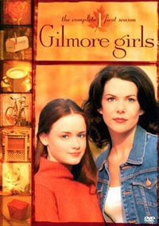
Overview
The drama series follows 16 year old Rory Gilmore and her 32 year old mother Lorelei Gilmore through their lives as the strong spirited mother-daughter duo grow up together in a Conneticut small town, Stars Hallow. In the Pilot, when Rory gets accepted into Chilton, a private prepatory school, Lorelai realises she can't afford the tuition. Despite the initial feeling not to, she looks to her parents, Richard and Emily Gilmore, for money to send Rory to Chilton. But before Richard can write a check, Emily finds a way to make this deal beneficial for them, friday night dinners with them in Hartford every week. Watch as Lorelai and Rory make there way through there eventful lives.
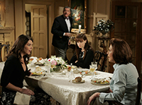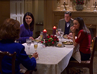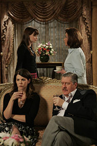
| Character |
Actor/Actress |
|
| Lorelai Gilmore |
Lauren Graham |
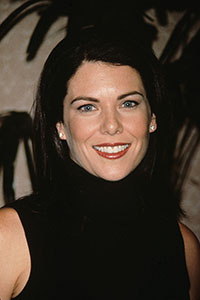 |
| Rory Gilmore |
Alexis Bledel |
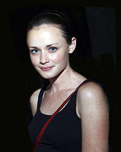 |
| Emily Gilmore |
Kelly Bishop |
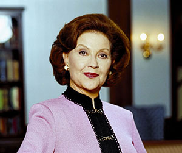 |
| Richard Gilmore |
Edward Hermann |
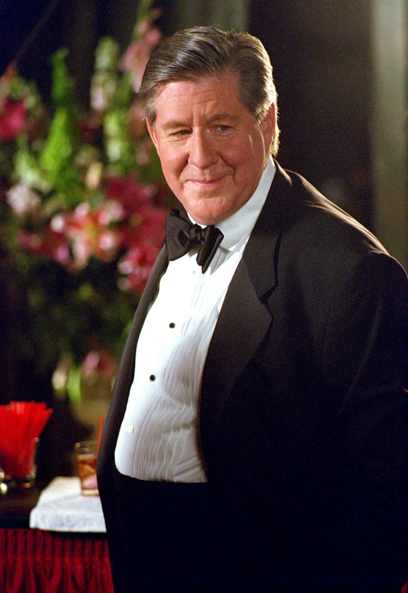 |
| Luke Danes |
Scott Patterson |
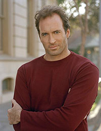 |
| Sookie St. James |
Melissa McCarthy |
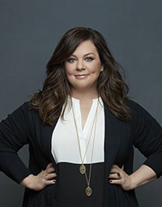 |
| Jackson Bell |
Jackson Douglas |
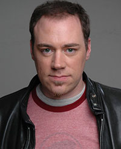 |
| Michel Gerrard |
Yanic Truesdale |
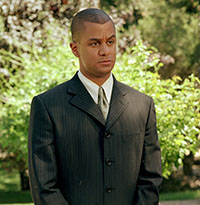 |
| Lane Kim |
Keiko Agena |
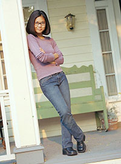 |
| Kirk Gleason |
Sean Gunn |
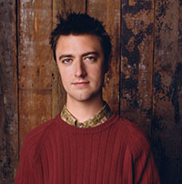 |
| Paris Geller |
Liza Weil |
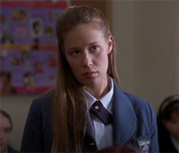 |
| Dean Forester |
Jared Padalecki |
|
| Jess Mariano |
Milo Ventimiglia |
 |
| Logan Huntzberger |
Matt Czuchry |
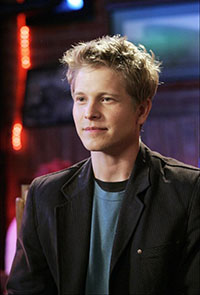 |
| Christopher Hayden |
David Sutcliffe |
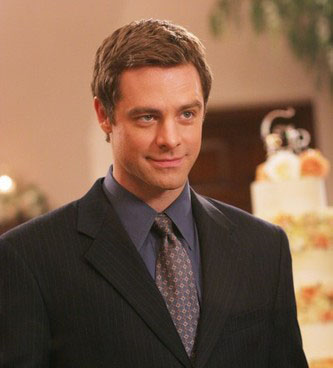 |
| Taylor Doose |
Micheal Winters |
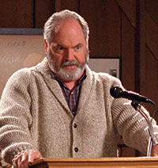 |
12 Most Popular Gilmore Girls Quotes
- "Think how dull your life would be without me." - Jess Mariano
- "It's my responsibility as your best friend to make sure you do exciting things even when you don't want to" - Sookie St. James
- "I smell snow." - Lorelai Gilmore
- "Because I love you, you idiot.." - Rory Gilmore
- "Does he have a motercycle? Cause if you're going to throw away your life he better have a motorcycle." - Lorelai Gilmore
- "I want to live my life so I can read an in-depth biography about myself in later years." - Paris Geller
- "I can be flexible, as long as everything is exactly the way I want it." - Lorelai Gilmore
- "People are particularly stupid today. I can't talk to any more of them." - Michel Gerrard
- "I just want you to know I'm in, I'm all in." - Luke Danes
- "People can live for a hundred years without living a minute" - Logan Huntzberger
- "Reality has no place in our world." - Lorelai Gilmore
- "Oy with the poodles already." - Lorelai Gilmore
Producers
- Amy Sherman-Palladino
- Daniel Palladino
- Gavin Palone
- David Rosenthal
- Lauren Graham
- Patricia Palmer
- Helen Pai
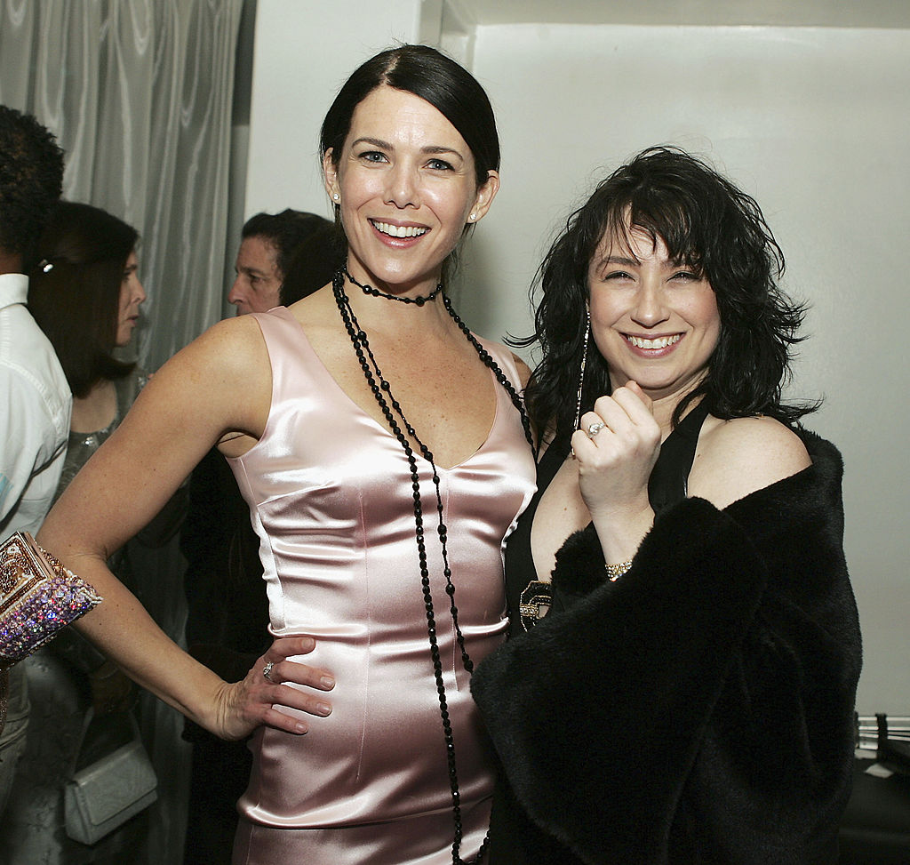
Notable Writers
- Amy Sherman-Palladino
- Daniel Palladino
- Jenji Kohan
- Bill Prady
- Jane Espenson
- Rebecca Kirshner
- Janet Leahy
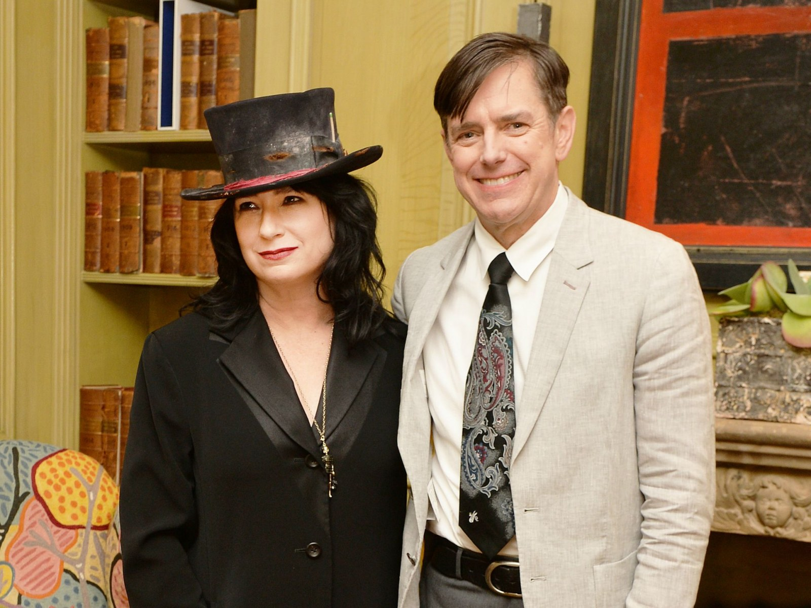
| Lorelai and Luke |
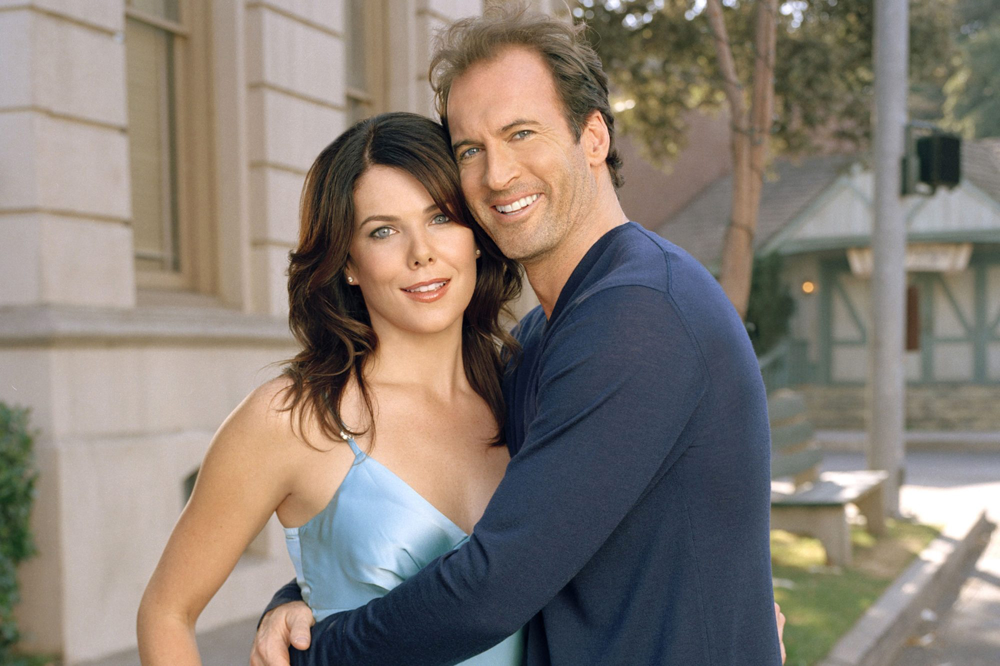 |
| Emily and Richard |
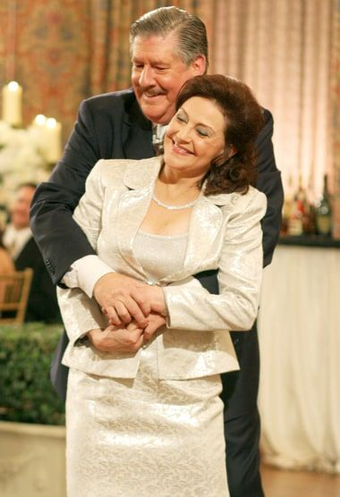 |
| Lane and Zack |
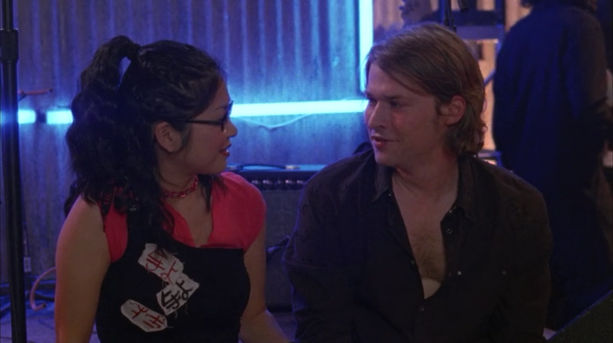 |
| Rory and Dean |
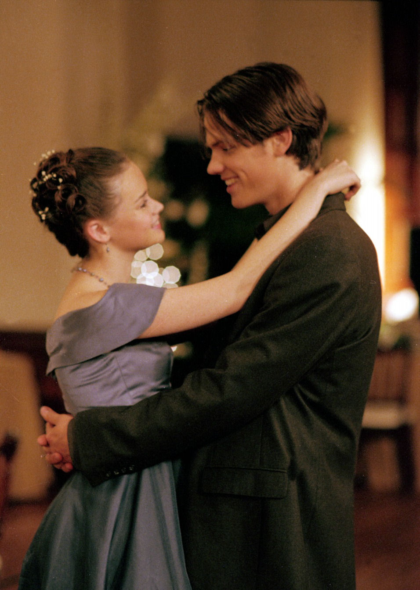 |
| Sookie and Jackson |
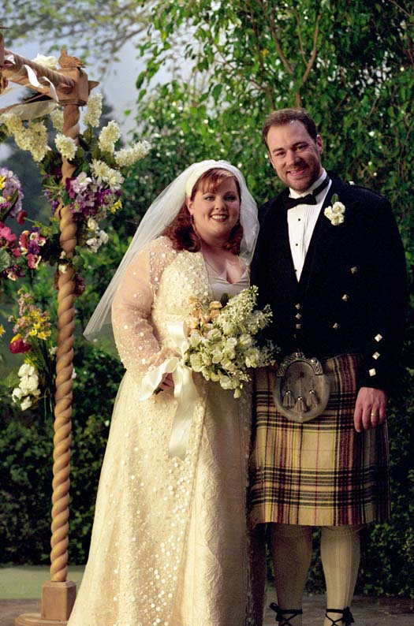 |
My Top 5 Gilmore Girl Couples
| Lorelai and Luke |
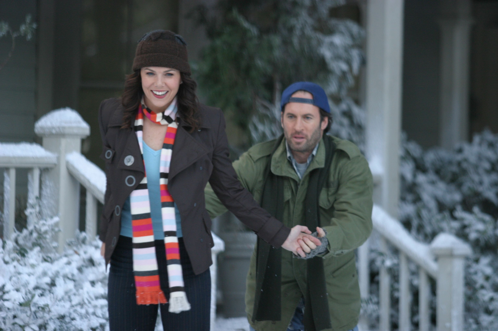 |
| Rory and Jess |
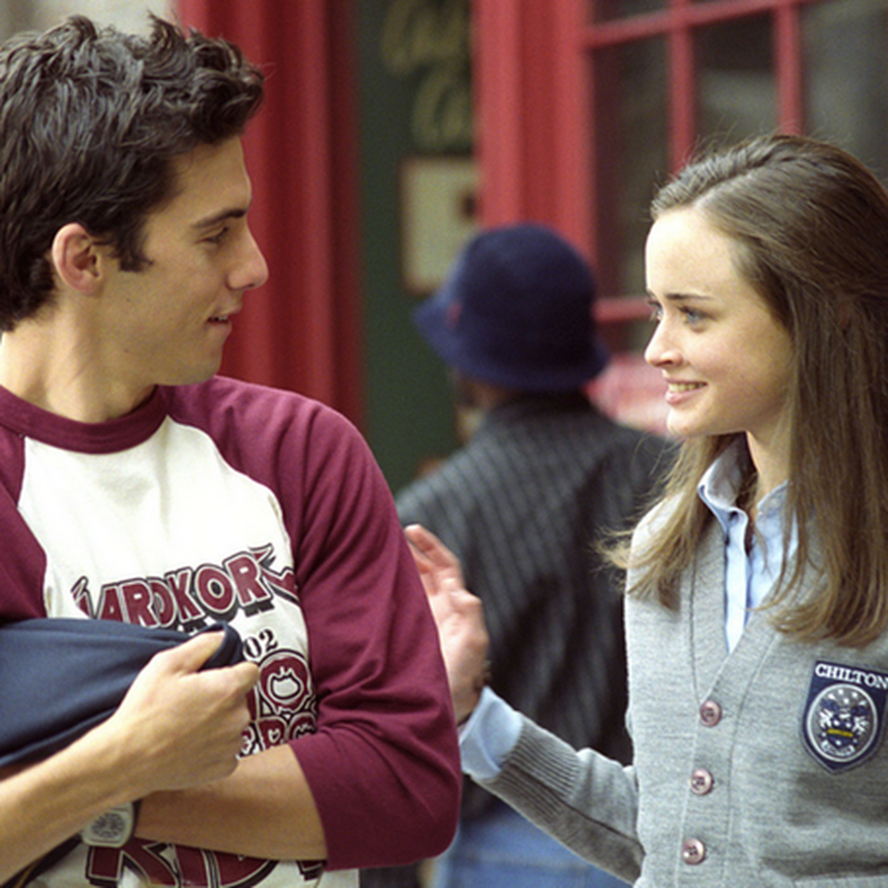 |
| Sookie and Jackson |
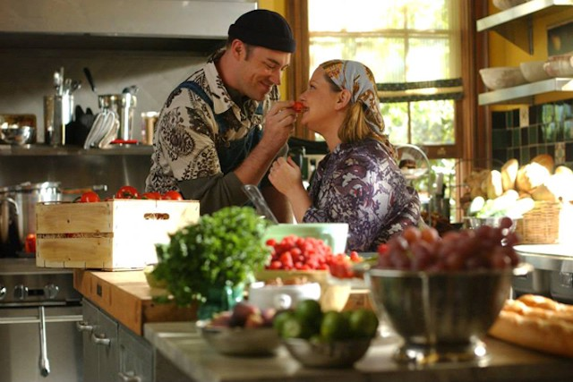 |
| Kirk and Lulu |
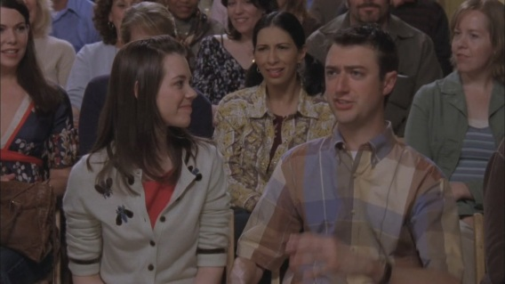 |
| Emily and Richard |
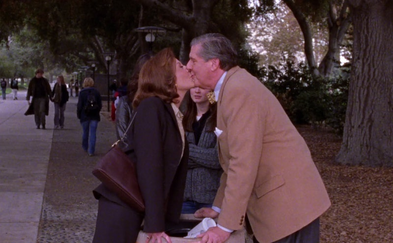 |
Gilmore Girls Website